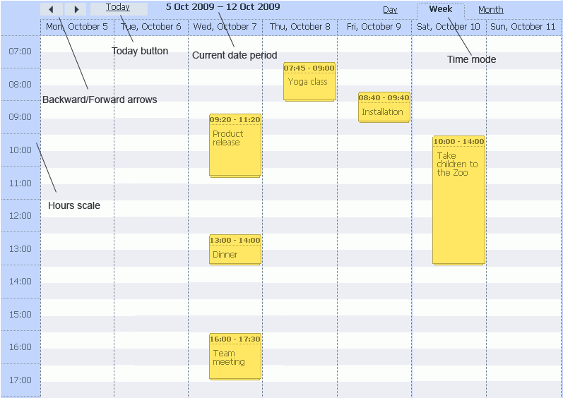
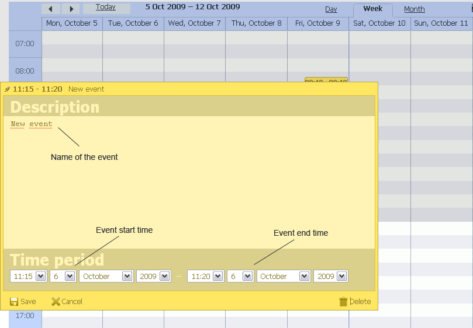
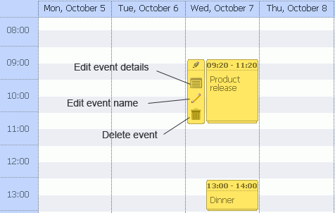
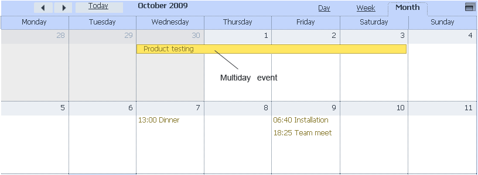
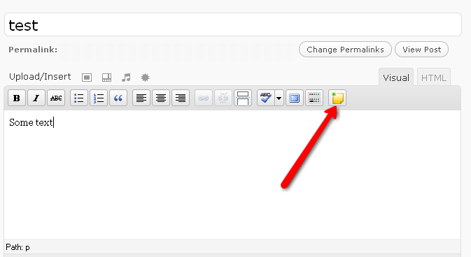
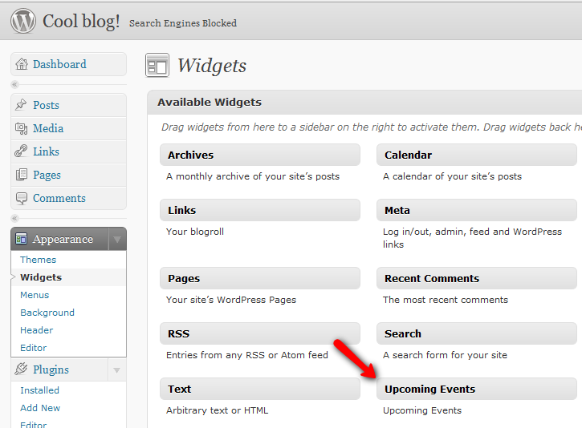
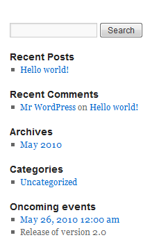
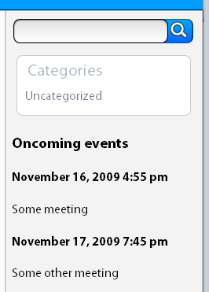

dhtmlxScheduler for the Wordpress
Installation
- Upload the content of event-calendar-scheduler.zip to the /wp-content/plugins/ directory
- Activate the plugin through the 'Plugins' menu in WordPress
After plugin activation, you will have a new page in your blog, with calendar on it. You can configure it through Plugins menu.
If you want to add scheduler to some other page - place the next snippet on the page or in the blog post
[[scheduler_plugin]]
Admin panel
Admin panel can be accessed by using Plugins - Scheduler menu
User Interface
dhtmlxScheduler is a user-friendly event scheduler component which allows you to present and schedule any event such as board meeting, business lunch, conference call, family reunion, movie night, or any other group event. You are allowed to create, edit, delete and drag-and-drop events in the scheduler.
dhtmlxScheduler manipulation is quite easy. Let’s begin.
First of all you should know that dhtmlxScheduler is able to schedule events for days, weeks and months. To set your time mode, you should select one of three available modes in the time mode panel located on the right side of the calendar panel.
Backward/forward arrows on the left side of the calendar panel allow you to move within calendar dates. Today button enables you to turn to the current date. The selected date period is specified behind today button. Hours scale is located on the left side of the scheduler.

Events Manipulation
Creating a New Event
To create a new event, double click on desired date field. After that “New event” window appears.

Here you can enter the event name and set start and end time of the event. To save the event in the calendar, click Save button on the bottom left corner of the window. If you would like to escape this window without saving the event, click Cancel.
One more way to create a new event is to press the left button of the mouse and drag date area to define the date period of the event. This can be done in Day, Week or Month views.
Editing Event
To change the event details, click on the event box. A small bar will appear on the left of the event box. Click the appropriate button to edit event name or details, or delete the event.

When you click Details button, a window with event details appears. It's the same window as you've seen when you created an event - here you can change event description and time period. To call this window, you can also double-click on the necessary event box.
To change event date and time, you can also drag the event box in Week/Month View to the necessary date field. In Day View you can change the event time by dragging the event box and changing its size.
Setting a Multiday Event
There is a possibility to set a multiday event. You can do it in “New event” window when you set start and end dates of the event.

Drag-and-Drop in dhtmlxScheduler
dhtmlxScheduler supports drag-and-drop, thus you are allowed to move and resize a created event within calendar area accordingly to your needs.
Deleting an Event
There are two ways to delete an event:
- Click the appropriate button in the left bar of the event.
- Call Details window and click Delete button on the bottom right corner.
Full Sreen View
To expand the shceduler to the full screen view, click the button on the top right corner. Another click on this button will return the scheduler to the standard view.

Post creating form
During post creating you can use a special button to create the new event. Button will add event and place the link to it on the page. 
Widget
After plugin activation you will be able to use “Upcoming events” widget  
The way, how information is rendered in the sidebar can be changed by changing template in event-calendar-scheduler\sidebar.php
Sidebar
Starting from version 1.2 you can place the list of oncoming events in sidebar. To do so , you need to add the next line to the sidebar's template.
<?php if (function_exists('scheduler_sidebar')) echo scheduler_sidebar(); ?>

Count of events on the sidebar can be configured in scheduler's settings.
If you want to adjust how info is rendered on sidebar, you can edit
wp-content\plugins\event-calendar-scheduler\sidebar.php
Export to the iCal format
Starting from version 1.2 plugin includes all necessary to export self in iCal format ( which can be loaded in Google Calendar, MS Outlook or some other desktop application. To add such possibility, just add the next link somewhere on the page ( inside post, or inside sidebar's template.
<a href='./wp-content/plugins/event-calendar-scheduler/ical.php'>Export events</a>
If you need to export only oncoming events, the link will look as
<a href='./wp-content/plugins/event-calendar-scheduler/ical.php?oncoming'>Export oncoming events</a>
All rights reserved.